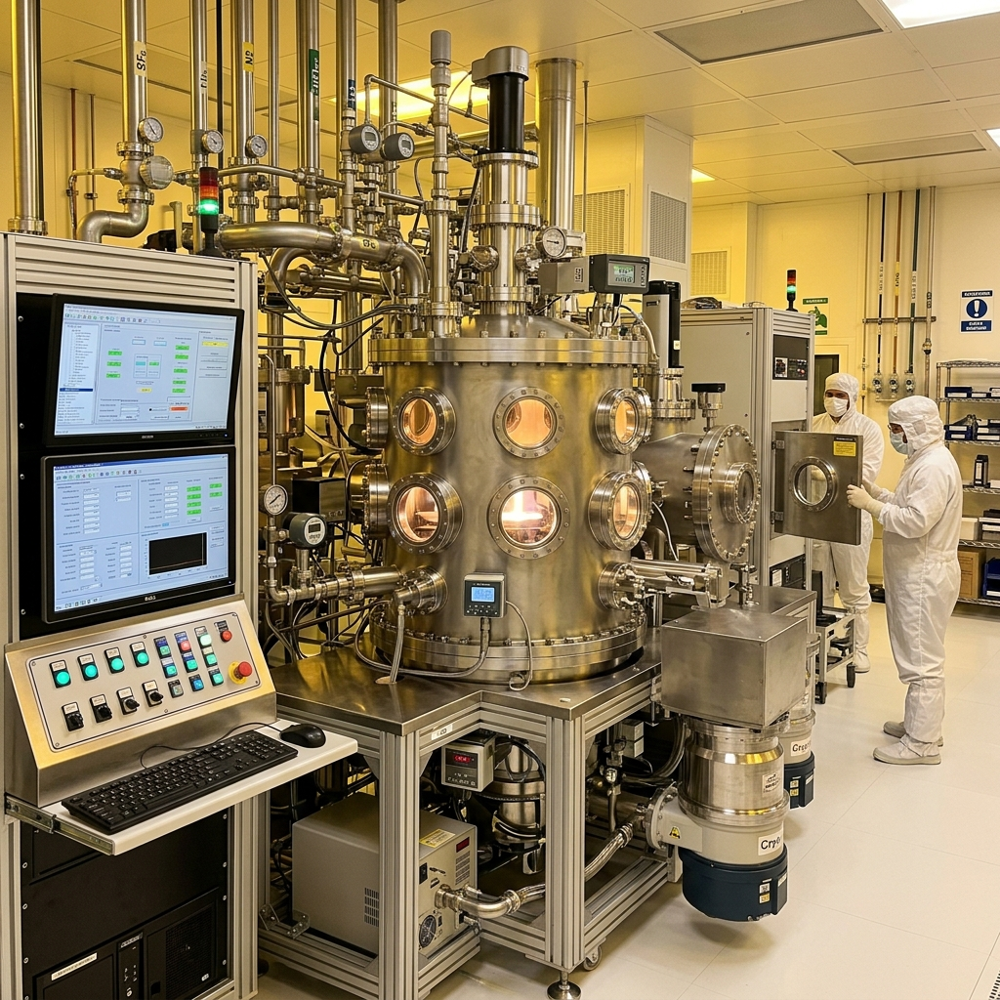
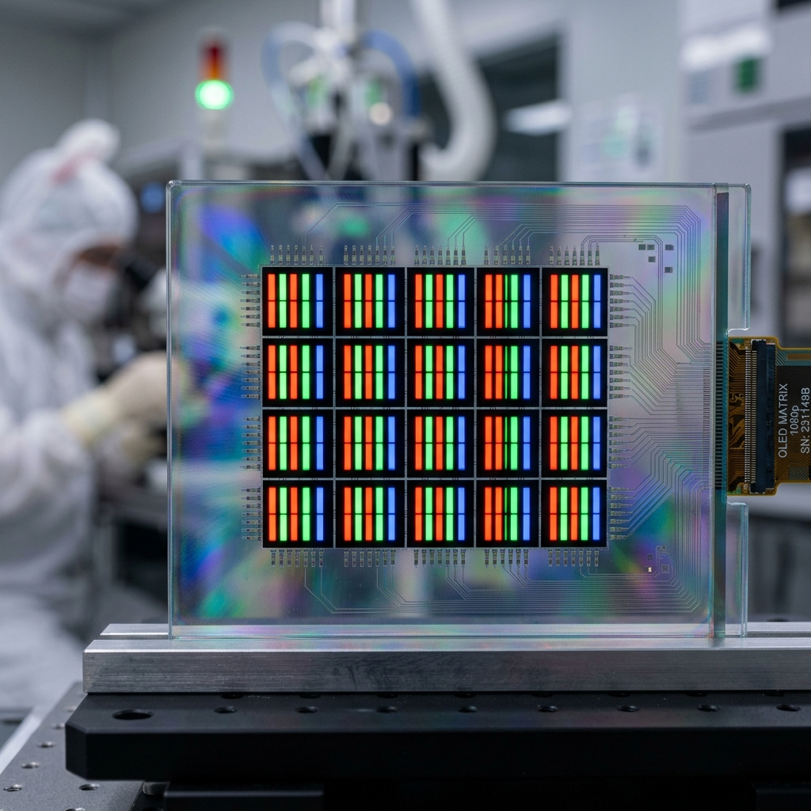
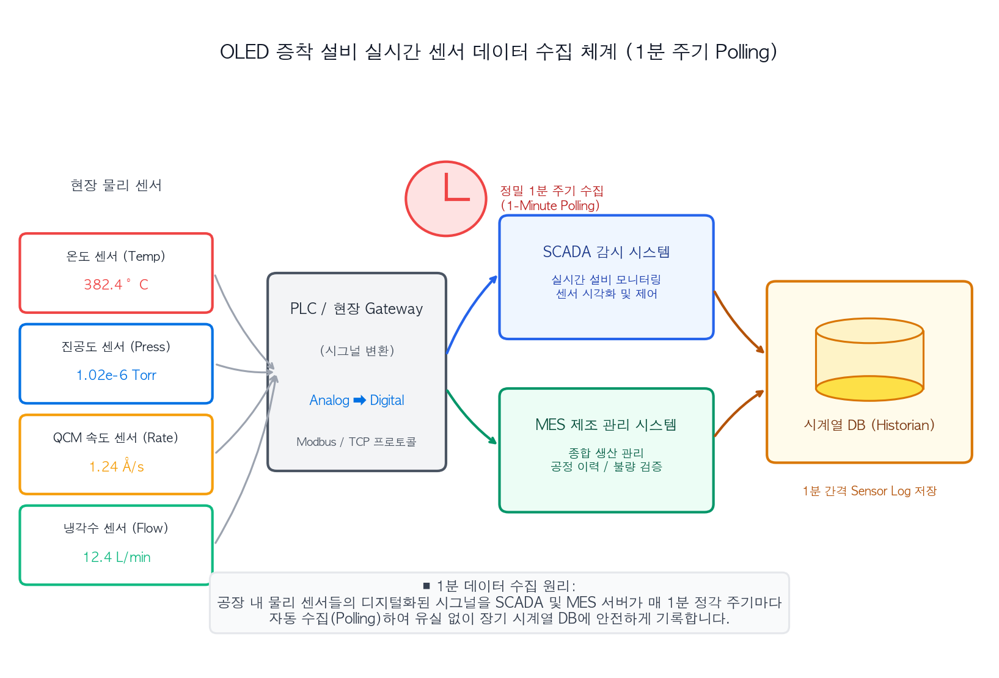
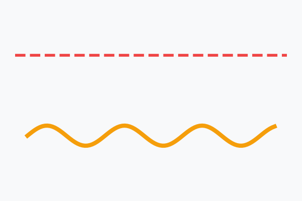
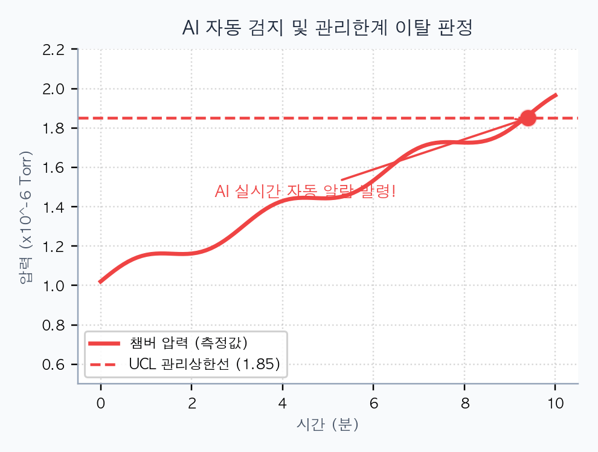
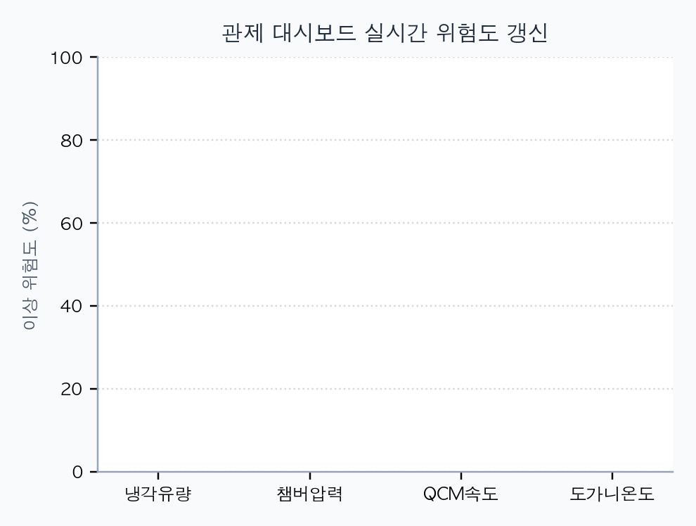
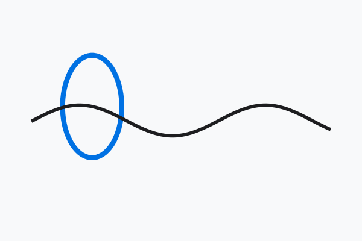
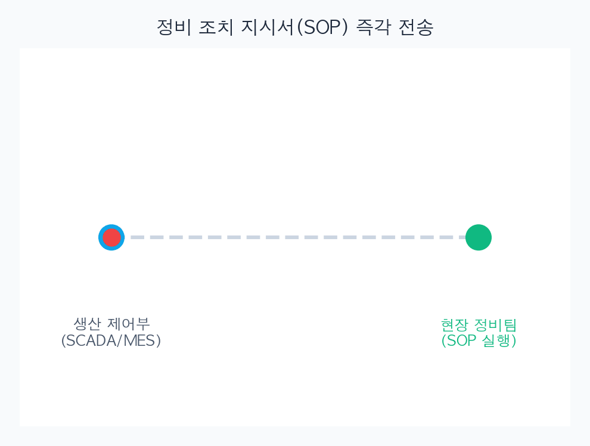

학습목표 1
OLED (Organic Light Emitting Diode - 유기 발광 다이오드) 유기물 증착 챔버가 어떤 센서로 모니터링되는지 이해하고, 시간축 기준 데이터 구조를 설명합니다.
OLED (Organic Light Emitting Diode - 유기 발광 다이오드) 유기물 증착 챔버의 온도·진공도·증착률 로그를 따라가며 이상 징후를 AI가 자동 감지하고 대시보드로 리포트하게 만듭니다.
하나의 증착 챔버를 기준으로 공정이 어떻게 모니터링되는지, 이상치가 발생하면 센서 로그에 어떻게 나타나는지, 그 신호를 AI가 자동 감지하고 엔지니어용 대시보드로 보고하게 하려면 무엇을 지시해야 하는지 순서대로 다룹니다.
설비 하나를 정하고, 정상 모니터링 화면을 본 다음, 이상 징후가 어떻게 시작되는지 추적하고, 마지막에 AI 감지 규칙과 리포트 화면으로 연결합니다.
OLED (Organic Light Emitting Diode - 유기 발광 다이오드) 유기물 증착 챔버가 어떤 센서로 모니터링되는지 이해하고, 시간축 기준 데이터 구조를 설명합니다.
챔버 압력 상승, 소스 온도 드리프트, 증착률 흔들림이 이상 징후로 나타나는 방식을 해석합니다.
AI 자동 감지 규칙과 대시보드 리포트 구성을 작업지시서로 작성합니다.
OLED (Organic Light Emitting Diode) 발광층을 만들 때 유기 재료를 진공 챔버 안에서 가열해 기화시키고, 기판 위에 얇게 증착합니다. 이때 소스 온도, 챔버 압력, QCM (Quartz Crystal Microbalance - 수정진동자 마이크로저울) 증착률, 냉각수 유량이 흔들리면 막 두께와 휘도 균일도가 같이 흔들릴 수 있습니다.

OLED 발광층 유기물 증착 설비 (VTE - Vacuum Thermal Evaporation - 진공 열 증착)
유기 재료를 가열·기화하여 기판에 증착하는 메인 진공 챔버

증착이 완료된 OLED (Organic Light Emitting Diode) 기판 샘플
R, G, B 유기물 서브픽셀 패턴이 정밀하게 형성된 유리 기판
OLED 발광층 유기물 증착 공정 중 VTE (Vacuum Thermal Evaporation - 진공 열 증착) - 03 챔버를 분석 대상으로 정합니다.
OLED (Organic Light Emitting Diode) 디스플레이의 발광층 유기재료를 고진공 챔버 안에서 가열해 기화시켜 기판 위에 얇게 입히는 핵심 설비입니다.

[VTE 진공 열 증착 설비의 개념도 및 작동 원리]
MES (Manufacturing Execution System - 제조 실행 시스템) / SCADA (Supervisory Control and Data Acquisition - 감시 제어 및 데이터 취득)에서 챔버 압력, 소스 온도, QCM (Quartz Crystal Microbalance - 수정진동자 마이크로저울) 증착률, 냉각수 유량을 1분 단위로 수집합니다.
현장의 다양한 물리 센서들이 시그널(전압, 진동 등)을 발생시키면 PLC (Programmable Logic Controller - 프로그래머블 로직 컨트롤러) / Gateway (게이트웨이) 장치를 거쳐 SCADA (Supervisory Control and Data Acquisition)와 MES (Manufacturing Execution System) 시스템으로 흘러 들어갑니다. 이 시스템은 1분 간격으로 고정된 시각(예: 12시 00분, 01분, 02분...)에 모든 센서값을 취합하여 시계열 데이터베이스 (Time-Series Database)에 안정적으로 저장(Historian DB)하게 됩니다.

[생산 설비 센서에서 시계열 DB로 이어지는 데이터 수집 흐름도]
1분 단위로 수집된 다차원 센서 데이터는 단순 나열만으로는 직관적인 가독성이 떨어집니다. 아래의 3가지 필수 통계/시계열 시각화 방법을 결합하여 가동 현황 분석 및 이상 인과관계를 가장 손쉽게 시각화할 수 있습니다.
각 센서별 스케일(Torr, °C, Å/s, LPM)에 맞춰 개별 라인을 시각화해, 실시간 노이즈와 서서히 증가/감소하는 물리적 추세(Drift)를 직관적으로 파악합니다.
정상 가동 이력의 평균값(CL)과 자연 변동 오차 한계선인 ±3σ(UCL/LCL) 라인을 그려 노이즈와 공정 이상 징후를 칼같이 판별합니다.
센서 간 상관계수(-1 ~ +1)를 연산하여 컬러 맵으로 시각화합니다. "소스 가온 시 QCM 증착 속도가 비례하여 오르는지" 등 다차원 공정 물리 법칙을 입증합니다.
소스 온도가 조금씩 상승하고, 챔버 압력이 UCL (Upper Control Limit - 관리 상한선) 근처로 접근하며, QCM (Quartz Crystal Microbalance - 수정진동자 마이크로저울) 증착률 변동폭이 커집니다. 비정상적인 열 축적이나 진공 누설의 초기 신호일 수 있습니다.
OLED 발광층 증착 공정 중, 개별 센서의 급격한 알람보다 다중 센서가 서로 얽히며 정상 범위를 서서히 벗어나는 '미세 드리프트(Drift)'로 이상이 나타납니다.
| 시간 (Timestamp) | 소스 온도 (Source Temp) | 챔버 압력 (Chamber Press) | QCM 증착률 (QCM Rate) | 상태 판정 |
|---|---|---|---|---|
| 13:00 (정상) | 185.0 °C (Normal) | 1.02e-6 Torr (Normal) | 1.20 Å/s (Normal) | Normal |
| 13:08 (온도 상승) | 186.9 °C ↗ (Drift) | 1.10e-6 Torr | 1.21 Å/s | Watch (온도) |
| 13:18 (진공 누설) | 188.1 °C | 1.65e-6 Torr ↗ (Watch) | 1.18 Å/s | Watch (복합) |
| 13:22 (증착 변동) | 189.5 °C | 1.85e-6 Torr (UCL 돌파) | 1.05 Å/s ↘ (OOC) | OOC (위험) |

[Step 3: 소스 온도 상승 및 챔버 압력 UCL 접근 실시간 시뮬레이션]
정상 구간 기준 Center (중앙선) / UCL (Upper Control Limit - 관리 상한선) / LCL (Lower Control Limit - 관리 하한선), 이동평균, 연속 상승 규칙, 다중 센서 동시 변화 규칙을 적용합니다. 이를 통해 엔지니어가 놓치기 쉬운 미세한 이상 패턴을 자동으로 진단해 냅니다.
현장의 엔지니어가 수많은 윈도우 창을 확인하지 않고도, 통계적 공정 제어(SPC - Statistical Process Control) 규칙을 AI가 실시간으로 비교하여 이상을 자동 추적합니다.

[Step 4: AI 통계 규칙 기반 관리 상한선(UCL) 돌파 및 경고 시스템]
설비 상태 타일, 관리도, 알림 목록, 전조 패턴 요약, 엔지니어 조치 메모를 한 화면에 구성합니다. 직관적인 UI (User Interface)를 제공하여 현장 대응 속도를 획기적으로 개선합니다.
엔지니어가 대형 복잡 데이터를 일일이 열어보지 않아도 직관적으로 설비 상황을 5초 내 파악할 수 있도록 핵심 지표가 한눈에 들어오는 인터페이스를 시각화합니다.
대시보드(Dashboard)는 자동차 계기판처럼 공장의 복잡한 센서 원본 로그와 설비 데이터를 실시간으로 수집·가공하여, 현재 운전 상태(정상/주의/이탈), 분석 차트(관리도), 긴급 경보(알림)를 한 페이지에 모아 엔지니어가 직관적으로 판단할 수 있게 만든 종합 관제 모니터링 화면입니다.

[Step 5: 실시간 설비 모니터링 대시보드 상태 타일 및 알림 애니메이션]
PM (Preventive Maintenance - 예방 보전) 이력, 재료 교체 시점, 진공 펌프 상태, QCM (Quartz Crystal Microbalance) 센서 보정 이력과 연결해 원인 후보를 좁힙니다. 교차 분석을 바탕으로 불량 발생 전 선제적 조치를 수립합니다.
AI가 검지해 낸 이상 징후가 장비 보정 후 자연스러운 물리적 흔들림(예: 도가니 재료 충진)인지, 진공 누설 등으로 인한 심각한 정비 대상인지를 현장 이력 데이터와 결합해 판정합니다.
| 검증 항목 | 핵심 원인 가설 | 현장 물리 이력 연계 | 정비 조치 방향 |
|---|---|---|---|
| 유기 재료 도가니 | 재료 고갈에 따른 잔량 부족으로 온도 불균형 가열 발생 | 최근 재료 교환(Refill) 이후 48시간 운전 데이터 | 보트 가열 히터 온도 프로파일 보정 진행 |
| 진공 배기 펌프 | 진공 리크(Leak) 발생 또는 밸브 오동작에 따른 압력 불안정 | 진공 펌프 PM(예방 정비) 및 오일 교체 주기 데이터 | 진공 배기 라인 밸브 작동 상태 및 누설 진단 검사 |
| QCM 센서 오차 | 수정진동자 센서 표면 막 두께 과다 누적으로 수명 만료 | QCM Sensor Life 센서 수명 잔량(%) 및 수명 그래프 | 도가니 가동 일시 중지 후 수정진동자 헤드 신규 교체 |

[Step 6: 현장 데이터와 설비 정비 PM 이력 간의 교차 검증 및 돋보기 추적]
장비 담당자와 공정 엔지니어가 같은 리포트를 보고 조치 우선순위를 정합니다. 데이터에 기반한 빠르고 투명한 커뮤니케이션으로 공장 다운타임을 최소화합니다.
검지된 이상 징후 분석 결과와 엔지니어 진단 결론은 생산 라인의 실시간 협업 시스템을 통해 자동 공유됩니다. 이를 통해 부서 간 장벽 없는 완벽한 대응 체계를 가동합니다.
설비 보전 엔지니어, 공정 기술팀, 생산 관리팀 담당자에게 동시에 OOC 경보 및 전조 히스토리 모바일 푸시 발송.
품질 불량이 실제 기판에 영향을 주어 수율이 훼손되기 전, 30분 내로 챔버 파트너들과 협력하여 유지 보수 작업을 수행.

[Step 7: 전 부서 간 이상 감지 리포트 공유 및 협업 피드백 루프]
VTE (Vacuum Thermal Evaporation - 진공 열 증착) - 03 설비는 1분마다 센서 로그를 기록하고, 운영자는 화면에서 현재값과 알람 상태만 확인합니다. 문제는 미세한 드리프트(Drift)가 알람이 발생하기 전까지는 일반 정상 노이즈처럼 보인다는 점입니다.
운영 화면은 현재값을 잘 보여주지만, “최근 30분 동안 같이 흔들린 센서 조합”을 자동으로 설명해주지는 않습니다.
예를 들어 13:05부터 소스 온도가 서서히 올라가고(Drift), 13:18에 챔버 압력이 UCL (Upper Control Limit) 근계 영역까지 접근하며(Watch), 13:22에는 QCM (Quartz Crystal Microbalance) 증착률이 설정 목표값에서 심하게 흔들려 관리 한계를 이탈하게 됩니다(OOC).
개별 데이터는 순간 스펙 이내지만, 5-point 이동평균선이 20분 이상 한 방향으로 지속 상승하는 이상 징후입니다.
챔버 진공 압력이 흔들리며 UCL (Upper Control Limit) 근계(85%선)에 접근합니다. 소스 온도 드리프트 시점과의 동조 여부를 체크합니다.
QCM (Quartz Crystal Microbalance) 증착률이 UCL 또는 LCL (Lower Control Limit) 범위를 이탈(OOC - Out of Control)하여 제품 Lot 불량 가능성이 높아집니다.
AI는 원인을 최종 단정짓는 솔루션이 아니며, 사전에 정의한 SPC (Statistical Process Control) 기준으로 데이터를 정리하여 Watch / OOC (Out of Control)를 정확하게 경고하고 설명하는 도구입니다.
대시보드는 비주얼뿐만 아니라 실질적인 제조 모니터링 허브가 되어야 합니다. 이상 발생 설비, 해당 Lot ID, 다차원 전조 흐름, SOP 조치 연계 프로세스가 원스톱으로 표출되어야 합니다.
QCM (Quartz Crystal Microbalance) 증착률 이동평균이 LCL (Lower Control Limit) 하한선을 하회 이탈했습니다. 약 25분 전부터 시작된 소스 온도의 드리프트와 진공 압력의 Watch(주의) 전조 패턴이 함께 탐지되었습니다.
챔버 진공도가 요동치며 압력 관리상한인 UCL (Upper Control Limit)의 85% 한계선에 3회 연속 도달했습니다. 진공 펌프 배기 상태 및 실링 부위를 체크하세요.
유기 재료 보트 충진 PM 이력 검토, QCM (수정진동자) 센서 주파수 보정, 챔버 배기 밸브 라인 및 열 교환 냉각수 유량을 즉시 진단하십시오.
소스 히팅 도가니 온도 5-point 이동평균선이 안정 상태에서 이탈해 위로 서서히 솟구치기 시작한 타이밍을 추적합니다.
패턴: 온도 드리프트 (Drift)온도 점진 상승 직후, 챔버의 고진공도가 미세하게 누설되며 관리 한계선인 UCL (Upper Control Limit) 85% 한계 영역에 다다랐는지 크로스 오버 분석을 진행합니다.
패턴: 압력 Watch (주의 경보)진공 저하와 도가니 가열 온도 상승이 QCM (Quartz Crystal Microbalance) 증착 속도 흔들림과 완벽히 동조되어 관리 영역을 벗어나는 타격 시점을 필터링합니다.
패턴: Rate OOC (관리 이탈 판정)유기 재료 보트 교환, 챔버 파트 클리닝, 수정진동자 헤드 보정, 진공 펌프 PM (Preventive Maintenance - 예방 보전) 정비 타임스탬프와 매칭해 유발 원인 후보를 단시간 내 정립합니다.
패턴: 현장 이벤트 매핑AI 진단 요약을 기반으로 공정 조치 매뉴얼 표준작업절차(SOP)를 구동하여 장비 조치 우선순위를 최종 수립하고 장비 수명 다운타임을 최소화합니다.
패턴: 정비 우선순위 확정AI가 VTE (Vacuum Thermal Evaporation) - 03 장비를 OOC (Out of Control)로 경고 판정하더라도, 실무자는 장비 작동 및 계측기 이상, 제품 품질 데이터를 정합 연계해 최종 결단을 내립니다.
OLED (Organic Light Emitting Diode) 유기물 증착 설비 VTE (Vacuum Thermal Evaporation) - 03의 1분 폴링 센서 로그를 분석해줘. 데이터는 timestamp, equipment_id, lot_id, source_temperature, chamber_pressure, qcm_rate (Quartz Crystal Microbalance Rate), cooling_water_flow 컬럼으로 이루어져 있어. 1. 먼저 lot_id 및 timestamp 필드 기준으로 시계열 정렬을 수행하고 결측 데이터와 스케일 이상치를 보정해줘. 2. 미세 노이즈를 필터링하고 거시적 패턴을 보기 위해 각 센서에 5-point 이동평균(Moving Average) 필터를 계산해줘. 3. 가장 안정적으로 가동되었던 최근 정상 Lot 20개 구간의 통계값을 사용해 Center (중앙값), UCL (Upper Control Limit - 관리 상한선), LCL (Lower Control Limit - 관리 하한선) 관리 경계를 계산해줘. 4. 센서 5-point 이동평균이 UCL/LCL 영역을 이탈하는 사건은 OOC (Out of Control - 관리 이탈) 상태로 판정하고, UCL의 85% 임계영역에 3회 연속 동시 접근할 때는 주의 경보인 Watch 상태로 정의해줘. 5. "도가니 소스 가열 온도 이상 드리프트 ➡ 챔버 진공 압력 관리 상한 돌파 ➡ QCM 박막 증착 속도 요동" 순의 다차원 전조 흐름 동조성이 있는지 OOC 발생 전 30분 구간을 역추적해 패턴을 요약해줘. 분석을 마친 뒤, 생산 현장 장비 엔지니어가 시각적으로 5초 내 진단 가능한 다음 구성의 HTML/CSS 기반 실시간 모니터링 대시보드 UI를 코딩해줘. 1. VTE 장비 라인별(VTE-01~04) Normal / Watch / OOC (관리 이탈) 한눈에 확인하는 설비 상태 타일 세트 2. 원본 측정 로그(Blue)와 5-point 이동평균선(Black), UCL/LCL(Red)을 실시간 매핑해 표시하는 QCM 증착 속도 관리도 차트 3. Lot ID별 OOC(관리 이탈) 감지 시각 및 센서 요약 경고 알림판 목록 4. OOC 사건 발생 이전 30분 시계열 트렌드 요약 리포트 5. 현장 정비 SOP(Standard Operating Procedure) 연계 점검 리스트 (도가니 잔량, 챔버 씰링, 진공 펌프 PM (Preventive Maintenance), QCM 수정진동자 건전성) 6. 아침 업무 시 전 부서와 빠르게 팩트를 공유할 수 있는 한 줄짜리 모바일 공유용 일일 이상 징후 일일 리포트
06강의 중추적 주제는 추상적이고 복잡한 기계학습 모델링이 아닌, 실제 공정과 핵심 장비의 1분 폴링 로그 데이터를 시작으로 "정상 상태 수집 ➡ 이상 징후 포착 ➡ AI 기반 SPC (Statistical Process Control) 판정 및 경보 ➡ 현장 대시보드 리포팅"까지의 제조 기술 엔지니어링 표준 대응 루프를 완성하는 것입니다. VTE (Vacuum Thermal Evaporation) - 03 장비의 소스 온도, 챔버 압력, QCM (Quartz Crystal Microbalance) 증착 속도를 일원화된 타임라인에 엮고 정확한 통계 연산 가이드를 전달하면, AI는 여러분의 손발이 되어 현장의 위험 다운타임을 사전 봉쇄하는 가장 정밀한 지휘 통제 화면을 생성해 낼 것입니다.